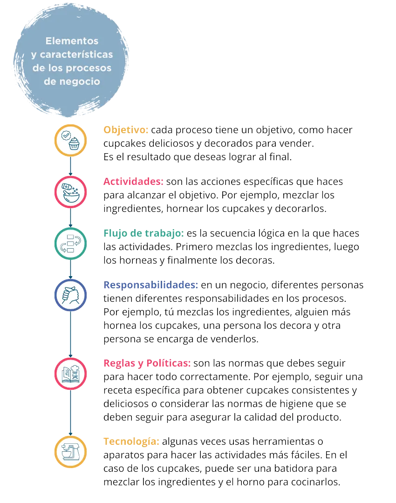

build Introducción
Los procesos de negocio bien definidos son esenciales para la digitalización. En un mundo cada vez más conectado y tecnológico, es importante adaptarse y aprovechar las ventajas que ofrecen las herramientas digitales. Al definir y documentar sus procesos, están sentando las bases para una transición más suave hacia la digitalización. Esto permite aprovechar las ventajas de la automatización, los análisis de datos, la inteligencia artificial y otras tecnologías innovadoras que pueden impulsar tu negocio hacia adelante.
En resumen, los procesos de negocio bien definidos son la base para el éxito de cualquier empresa. Nos ayudan a ser más eficientes, consistentes y nos preparan para la automatización y la digitalización. Entonces, si tienes que mejorar tu negocio, recuerda comenzar por los procesos. ¡Es como tener una guía clara de lo que te llevará hacia el éxito, vamos por ello!
troubleshoot ¿Qué son los procesos de negocio?
Los procesos de negocio hacen referencia al conjunto de acciones estructuradas e interrelacionadas que sigue una pyme para alcanzar sus objetivos y generar valor para sus clientes. Estos procesos pueden ser simples o complejos e involucrar a diferentes áreas de la pyme como producción, ventas, marketing, atención al cliente y administración. Una buena gestión de los procesos permite maximizar la eficiencia, mejorar la productividad y tomar decisiones informadas.
1 Introducción a los Procesos de Negocio

Veamos algunos casos-ejemplos:
Caso 1: Proceso de Atención al Cliente en un restaurante:
- El cliente llega al restaurante y es recibido por el mesero.
- El mesero toma la orden del cliente y la lleva a la cocina.
- El chef prepara la comida y la envía al mesero.
- El mesero entrega la comida al cliente y le pregunta si todo está bien.
- El cliente paga la cuenta y se va satisfecho.
Caso 2: Proceso de Compra en una tienda en línea:
- El cliente busca el producto en el sitio web.
- Agrega el producto al carrito de compras.
- Proporciona los detalles de envío y pago.
- Realiza el pago.
- Recibe una confirmación y número de seguimiento del pedido.
- El producto es entregado en la dirección proporcionada.
Los procesos de negocio son como recetas para hacer las cosas en una empresa. Imagina que tienes un negocio de cupcakes. Para hacer tus deliciosos cupcakes, necesitas seguir ciertos pasos organizados. Cada uno de esos pasos, es un elemento del proceso de negocio y los veremos a continuación:
Así mismo, los procesos de negocio tienen como mínimo ciertas características, distingamos cuáles son:
- Eficiencia: Un proceso bien organizado te permite hacer cupcakes más rápido y sin perder tiempo en pasos innecesarios.
- Calidad: Seguir el mismo proceso te ayuda a hacer cupcakes consistentes y deliciosos cada vez.
- Coordinación: Cuando todos conocen su rol y siguen el flujo de trabajo, el negocio funciona de manera más coordinada y efectiva.
Observemos a modo de ejemplo, el siguiente proceso y sus elementos.
Ejemplo: Proceso de atención al cliente en una tienda de ropa:
- Objetivo: Brindar una excelente experiencia de compra al cliente.
- Actividades: Saludar al cliente, ayudarlo a encontrar lo que busca, mostrarle opciones, atender sus preguntas y procesar su pago.
- Flujo de trabajo: Saludo -> Ayuda -> Mostrar opciones -> Preguntas -> Pago.
- Responsabilidades: Un vendedor atiende al cliente, otro maneja el inventario y otro procesa el pago.
- Reglas y Políticas: No presionar al cliente para comprar, ser amable y respetuoso.
- Tecnología: Puede haber un sistema de punto de venta para procesar el pago rápidamente.
Reflexión. Preguntas abiertas:
- ¿Por qué crees que los procesos operativos son como las piezas principales de un rompecabezas para una empresa? Identifica los procesos operativos de tu empresa.
- ¿Puedes mencionar un ejemplo de un proceso de soporte en tu pyme, que haya sido clave para tu éxito? ¿Cómo lo podrías mejorar con el uso de tecnologías digitales?
- ¿Cómo pueden los procesos de gestión asegurarse de que todas las piezas del rompecabezas se unan adecuadamente para lograr los objetivos de la empresa?
2 Identificación y Mapeo de Procesos

3 Diseño y optimización de procesos
Diseñar procesos eficientes y efectivos es como construir una máquina bien aceitada que funciona sin problemas y produce resultados excepcionales. Aquí te presento algunas buenas prácticas para lograrlo:

Optimizar los procesos es como ajustar un reloj para que funcione con precisión y ahorre tiempo y dinero. Aquí te presento algunas estrategias efectivas para lograrlo:

Un ejemplo de tiempo estándar podría ser el tiempo promedio que un trabajador necesita para ensamblar un producto específico en una línea de producción. Supongamos que se quiere determinar el tiempo estándar para ensamblar un teléfono móvil:
- Se cronometra el tiempo que un trabajador experimentado tarda en ensamblar un teléfono móvil desde el inicio hasta la finalización en varias ocasiones (por ejemplo, 20 veces).
- Se suman los tiempos registrados y se dividen por el número de observaciones para obtener el promedio.
- Supongamos que el tiempo total registrado fue de 100 minutos para las 20 observaciones, entonces el tiempo estándar para ensamblar un teléfono móvil sería 100 minutos / 20 observaciones = 5 minutos por teléfono.
Este tiempo estándar de 5 minutos indica que, en condiciones normales y con un desempeño óptimo, un trabajador podría ensamblar un teléfono móvil en aproximadamente 5 minutos. Es importante destacar que el tiempo estándar debe revisarse periódicamente y, ajustarse según las condiciones cambiantes de producción o factores externos que puedan afectar el proceso.
Para más detalles ver el siguiente video
https://youtu.be/d-d19ze6V-E
4 Gestión y Control de Procesos
4.1. Elementos clave de la gestión de procesos: indicadores de rendimiento (Kpis), SLAs, etc.
Sugerimos ver el siguiente video para mayor detalle:
https://youtu.be/0fTWBDyZ4fI
5 Procesos de negocio y transformación digital
En el mundo actual, la tecnología digital ha revolucionado la forma en que las empresas operan y gestionan sus procesos.
Para mayor detalle, es recomendable ver este video:
https://youtu.be/PLpDCK3Zy7Q
La transformación digital ha sido una prioridad para muchas empresas en la última década, y algunas han logrado transformaciones exitosas que han impulsado su crecimiento y éxito en el mercado. Veamos algunos casos de estudio de empresas que han llevado a cabo transformaciones exitosas:
- Netflix: Esta empresa, ha sido un ejemplo destacado de transformación digital en la industria del entretenimiento. La empresa pasó de ser un servicio de alquiler de DVD por correo a un gigante del streaming (transmisión en tiempo real de contenido multimedia, como videos, música o eventos, a través de Internet) en línea. Netflix invirtió en tecnología para mejorar la personalización de contenidos y recomendaciones, lo que permitió a los usuarios disfrutar de una experiencia de entretenimiento altamente personalizada. Esta transformación ha llevado a Netflix a convertirse en uno de los principales proveedores de contenido en línea a nivel mundial.
- Amazon: Esta empresa ha revolucionado la forma en que las personas compran en línea. La empresa comenzó como una tienda de libros en línea y ha evolucionado para ofrecer una amplia gama de productos y servicios. Amazon ha sido pionero en el uso de tecnologías avanzadas, como la inteligencia artificial y la robótica, para optimizar sus operaciones logísticas y mejorar la experiencia del cliente. La empresa ha transformado radicalmente la industria minorista y ha establecido nuevos estándares en términos de rapidez y eficiencia en la entrega.
- Starbucks: Es un ejemplo de cómo la tecnología puede mejorar la experiencia del cliente en la industria de servicios. La empresa ha invertido en aplicaciones móviles y sistemas de pago para agilizar el proceso de compra y fomentar la lealtad del cliente. Los clientes pueden realizar pedidos y pagar a través de la aplicación, lo que reduce los tiempos de espera y facilita la personalización de los pedidos. Esta transformación digital ha impulsado el crecimiento de Starbucks y ha fortalecido su relación con los clientes.
- General Electric (GE): Es un ejemplo de cómo una empresa centenaria ha abrazado la transformación digital para mantenerse relevante en la era moderna. La compañía ha implementado tecnologías digitales en sus operaciones industriales, utilizando el Internet de las Cosas (IoT) y el análisis de datos para optimizar el rendimiento de sus equipos y mejorar la eficiencia en la producción. Esta transformación ha permitido a GE ofrecer soluciones más avanzadas y personalizadas a sus clientes.
- Adidas: Ha utilizado la transformación digital para mejorar su cadena de suministro y ofrecer productos personalizados a sus clientes. La empresa ha implementado tecnologías de fabricación aditiva (impresión 3D) para producir calzado personalizado de manera más eficiente y rápida. Además, Adidas ha utilizado el análisis de datos para entender mejor las preferencias de los clientes y diseñar productos que se ajusten a sus necesidades específicas.
6 Futuras tendencias en procesos de negocio
6.1 Exploración de tendencias emergentes en procesos de negocio
En el mundo empresarial en constante evolución, las tendencias emergentes en los procesos de negocio juegan un papel crucial para mantener la competitividad y la eficiencia. A continuación, exploraremos algunas de las tendencias más importantes de manera sencilla:
Automatización Inteligente: La automatización inteligente, que combina la inteligencia artificial y la automatización robótica de procesos (RPA), está transformando la forma en que se llevan a cabo las tareas comerciales. Estos sistemas pueden aprender y mejorar a medida que interactúan con datos, permitiendo la automatización de tareas repetitivas y la toma de decisiones más precisas. Por ejemplo, chatbots inteligentes pueden responder preguntas de clientes en tiempo real, mejorando la atención al cliente.
Procesos de negocio ágiles: Los procesos de negocio ágiles se basan en la flexibilidad y la adaptabilidad para responder rápidamente a los cambios del mercado y las necesidades de los clientes. En lugar de seguir procedimientos rígidos, las empresas adoptan enfoques más colaborativos y abiertos a la experimentación. Esto les permite ajustar sus operaciones rápidamente y mantenerse al día con las demandas cambiantes del entorno empresarial.
Analítica avanzada de datos: La analítica avanzada de datos está revolucionando la forma en que las empresas toman decisiones informadas. Utilizando técnicas de Big data y análisis predictivo, las organizaciones pueden obtener ideas más profundas sobre sus operaciones y clientes. Esto les permite optimizar sus procesos y servicios, anticipar tendencias y tomar decisiones más estratégicas. Por ejemplo, análisis de datos puede ayudar a predecir la demanda de productos y planificar el inventario de manera más eficiente.
Integración de Blockchain en procesos empresariales: La tecnología blockchain está siendo utilizada cada vez más en la gestión de procesos empresariales. Esta tecnología permite el registro seguro y descentralizado de transacciones, lo que mejora la transparencia y la confianza en la cadena de suministro y otros procesos. Por ejemplo, en la industria de alimentos, blockchain puede rastrear el origen de los productos y garantizar su autenticidad y seguridad.
Enfoque en la experiencia del cliente: La experiencia del cliente se ha convertido en un enfoque central para muchas empresas. Los procesos de negocio se están diseñando con la satisfacción del cliente en mente, desde la adquisición hasta el servicio postventa. La personalización y la atención al cliente son clave para retener clientes y fomentar la lealtad.
Conclusión:
Las tendencias emergentes en procesos de negocio están revolucionando la forma en que las empresas operan y se relacionan con sus clientes. La automatización inteligente, la agilidad, el análisis de datos, la integración de blockchain y el enfoque en la experiencia del cliente son factores clave para el éxito empresarial en el futuro.
Referencias
Ramirez Leobardo (2019), Curso de ingeniería de Métodos, Moodle Universidad Panamericana
Ramirez Leobardo (2023), Gestión de la Calidad, Moodle Universidad Panamericana
Ramirez Leobardo (2018), Dirección de Empresas, Moodle Universidad Panamericana
loyalty Beneficios

En conclusión, tener procesos de negocio bien definidos es esencial para el éxito de una empresa. Nos ayuda a trabajar de manera más eficiente, minimizar errores, mantener una calidad constante y prepararnos para el futuro. Así que ¡no subestimes el poder de los procesos bien establecidos!
Reflexión
En el mundo empresarial, a veces nos enfocamos en los resultados finales y nos olvidamos de los procesos que nos llevan allí. Sin embargo, los procesos son la base de nuestro éxito. Si dedicamos tiempo y esfuerzo a definirlos correctamente, nos beneficiaremos de una mayor eficiencia, calidad y adaptabilidad. Entonces, recordemos siempre la importancia de tener procesos de negocio bien definidos, ¡son el camino hacia el crecimiento y el logro de nuestras metas!